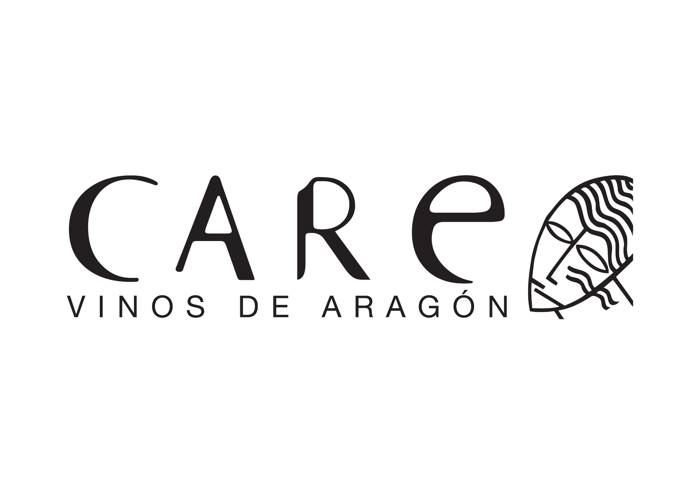

VISOR DE MADURACIÓN CARE
Este visor pronto mostrará:
Filtros para Año, Fecha, Bodega, Zona, Variedad, Punto y Ensayo
Gráficas: Grado – Acidez Total – pH, ºBrix, Solutos, IMF, MATUROX
Tabla de resultados por análisis
Integración completa con Excel en progreso…